1. 章の名前

\(\LaTeX\)
1
+
2
a
-
1
(
3
+
2
)
×
5
定義
ここに定義を書く
定理
1.2
ラベルを利用することで、登録した\(\LaTeX\)の式を再利用できます
命題
(命題の名前)
...
補題
1.2.3 補題の名前
...
公理
...
ここに書いた内容は折りたたまれます
系
ここに
文章
を記述
この文章は
下線
、
太字
、
イタリック体
を含みます
これらを/*重ねて*使うこと/
もできます
...
例題
...
解答
アンカーの例
・これで1.の章に飛びます
1.
・補題
1.2.3
w1eX.compileを実行すると、このノートをhtmlファイルに出力できます。